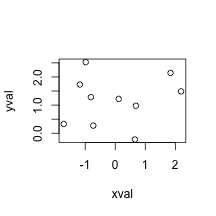
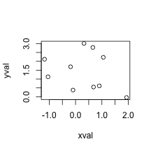
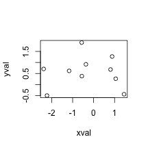
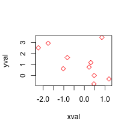

author: Taavi Päll date: 2017-09-08 autosize: true
General form of R function is following:
function(argslist) exprExample function with no arguments, doing only one thing:
dedication <- function() {
cat("And Pierce Brosnan how dare you prescribe\n
Sad grief and bed wet pills")
}
dedication() # to run functionAnd Pierce Brosnan how dare you prescribe
Sad grief and bed wet pillsUpdated function to insert your computer’s username into that line instead of that actor:
not_medication <- function() cat(paste("And", system("whoami",T), "how dare you prescribe\n
Sad grief and bed wet pills"))
not_medication() # to run functionAnd taavi how dare you prescribe
Sad grief and bed wet pillsmyplot <- function(xval, yval) {
plot(x = xval, y = yval)
}
myplot(rnorm(10), rnorm(10, 1, 1)) # by position
====================================================
by complete name
myplot(xval = rnorm(10), yval = rnorm(10, 1, 1)) # by complete name
========================================================
by partial name
myplot(xv = rnorm(10), y = rnorm(10, 1, 1)) # by partial name
{}.Onliners don’t need braces:
plusone <- function(x) x + 1
plusone(1)[1] 2fun1 <- function(x) {
x + 1 # function returns the result of this expression
}
fun1(1) [1] 2================================
Here, function directs the result into an object y within function environment:
fun2 <- function(x) {
y <- 3 * x - 1
}
fun2(5)No result is outputted! + return() can be used to pass the value of object created inside function to outside. Can you fix this function?
sum_stat <- function(x, f = "mean"){
do.call(f, list(x))
}
v <- rnorm(10)
sum_stat(v) # by default this function calculates mean[1] -0.3210855myplot <- function(xval, yval, ...) plot(x = xval, y = yval, ...)
myplot(rnorm(10), rnorm(10, 1, 1), col = "red", pch = 5) # we pass color and shape arguments to plot function
%>% also allows to produce functions. placeholder===================================
Functional sequence:
library(dplyr)
mae <- . %>% abs %>% mean(na.rm = TRUE)
mae(rnorm(10))[1] 0.8701861This is similar to following function:
mae <- function(x) {
mean(abs(x), na.rm = TRUE)
}Common use case of these functional sequences is inside lapply/sapply:
library(dplyr)
library(readr)
library(reshape2)
data <- paths-to-csv-files %>%
lapply(. %>% read_csv %>% melt)value %>%
foo %>% {
x <- bar(.)
y <- baz(.)
x * y
} %>%
and_so_on=================================
Calculate col means of mtcars data using for loop:
means <- c(1:ncol(mtcars))
for(i in seq_along(mtcars)){
means[[i]] <- mean(mtcars[[i]], na.rm = TRUE)
}
head(means)[1] 20.090625 6.187500 230.721875 146.687500 3.596563 3.217250When we want medians, we need to repeat all these lines, but replace mean with median. Not very efficient.
=====================================
Lets replace for loop with apply to calculate col means of mtcars:
apply(mtcars[,1:5], 2, mean, na.rm = TRUE) mpg cyl disp hp drat
20.090625 6.187500 230.721875 146.687500 3.596563 Note, second argument to apply function specifies subscript which the function is applied over. For a matrix 1 indicates rows, 2 indicates columns.
===================================== Define your own functions:
apply(mtcars, 2, function(x) length(x[x<6])) mpg cyl disp hp drat wt qsec vs am gear carb
0 11 0 0 32 32 0 32 32 32 30